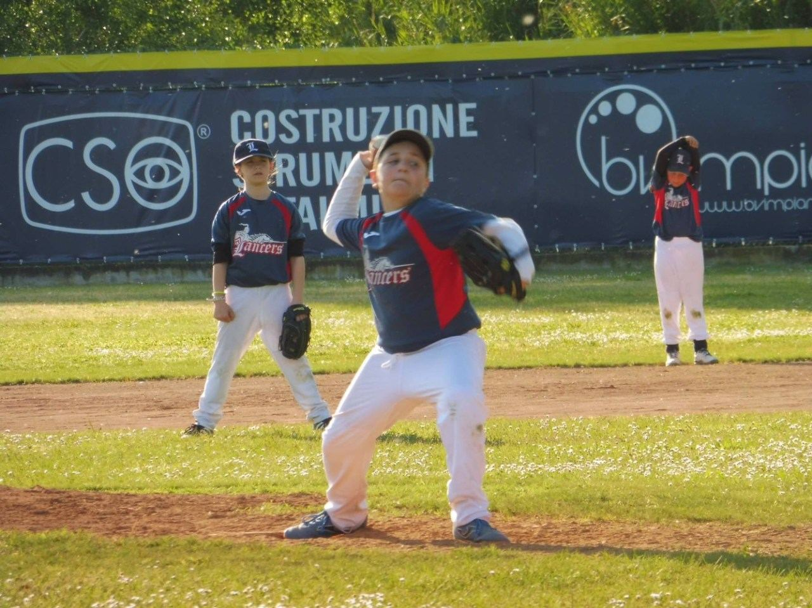

Le rosse Pantere di Lucca, una squadra assai giovane, non oppone resistenza alla nostra compagine che archivia la pratica come una formalità: nei quattro inning giocati ottengono sempre il massimo punteggio. Si tratta di una di quelle gare che, a parere di chi scrive, capitano un po’ troppo spesso nel baseball giovanile toscano. In pratica le varie squadre partecipanti al campionato esprimono valori molto diversi da loro, al punto che sovente è semplice prevedere a priori l’esito di un incontro. Fatto che toglie diletto al pubblico. Finisce 16 a 3 in nostro favore.Il motivo conduttore della gara è molto semplice: quasi sempre i nostri riescono ad arrivare in prima base per via di 4 balls del lanciatore delle Pantere. Poi, per delle errate ricezioni, passano di base in base fino alla realizzazione dei vari punti. Ma non bisogna pensare che la netta vittoria dei Lancerini sia dovuta esclusivamente ai demeriti degli avversari. Anzi, i nostri ragazzi hanno affrontato la sfida con molta concentrazione fin dalle prime battute. Il coach ha poi gestito la sua truppa con intelligenza quando, a partita ormai vinta, ha approfittato dell’occasione per far esordire in gare ufficiali un nuovo lanciatore, Alfredo Signorini classe 2007, fin qui utilizzato al più in amichevole. E uno dei punti deboli dei Lancers è proprio la penuria di lanciatori, fatto che ha più volte compromesso il buon esito della gara. Comunque, la pratica di permettere alla nuove leve di emergere, sfruttando momenti propizi, è una pratica che ogni società dovrebbe attuare, in qualunque sport.
Questa la formazione scesa in campo: Matteo Angelini, Daniele Gerges, Tommaso Lenzerini, Alberto Lopez, Paolo Manetti, Silvia Onori, Gabriele Paoli, Alessio Pellegrini, Lorenzo Scarpulla, Alfredo Signorini, Noemi Vecchi.
Primo inning 4-0. Per la fase difensiva, come di consueto a inizio gara, si presenta sul monte di lascio Lopez, ricevitore Pellegrini. Al lancio Lopez è una sicurezza: elimina un avversario, poi il n° 2 lucchese batte e arriva fino alla terza base ma l’eliminazione per 3 strikes dei n° 99 e 10 pone fine al turno di battuta. In attacco Lopez e Paoli vengono promossi in prima base con 4 balls del lanciatore. In occasione della promozione di Paoli una ricezione difettosa permette a Lopez e allo stesso Paoli di realizzare il punto. Come fosse una fotocopia, promossi per 4 balls che poi sfruttano un errore in ricezione, entrano i punti anche di Pellegrini e Scarpulla.
Secondo inning 4-0. Lanciatore Lopez, ricevitore Pellegrini. Un avversario riesce a battere una palla di Lopez ma Scarpulla è lesto a eliminarlo in prima base. Anche il n° 21 batte ma si tratta di un campanile che viene recuperato da Pellegrini che è lesto a lanciare a Scarpulla che lo elimina. Il n° 7 viene eliminato per 3 strikes da Lopez. In attacco Manetti batte una delle 4 palle che oggi i ragazzi di Zalonici riescono a colpire e poi, con delle rubate, giunge fino in terza base per poi fare punto approfittando di una ricezione difettosa. Signorini, Vecchi e Onori giungono in prima base per 4 balls. Sulla battuta di Angelini Signorini è costretto a correre a per liberare le basi ma la palla arriva a casa base prima di lui: è un out forzato. Tuttavia il suo sacrificio consente a Vecchi, Onori e Angelini di andare a punto. In particolare Vecchi sfrutta ancora una ricezione difettosa con Lopez in battuta che è promosso in prima base per base-ball, Onori sfrutta la bella battuta di Paoli e riesce ad arrivare a casa base, Angelini completa il giro del diamante grazie alla battuta di Pellegrini. Dopo Angelini arriva a casa base anche Lopez ma sarebbe il quinto punto dell’inning e quindi non conta.
Terzo inning 4-0. Lanciatore Lopez, ricevitore Pellegrini. Lopez, bravissimo nell’occasione, elimina tre battitori avversari senza concedergli nemmeno la prima base. Per gli avversari lancia il n° 6 e riceve il n° 99. Dopo l’eliminazione di Scarpulla, Manetti viene colpito e quindi è promosso in base. Prima Signorini e poi Vecchi ottengono la prima base per 4 balls, con Manetti che nel frattempo ha guadagnato la terza base. I rossi di Lucca decidono lo scambio fra lanciatore e ricevitore, ma i risultati continuano a non arrivare. Infatti Onori giunge in prima base per 4 balls, cosa che impone l’avanzamento di Manetti fino a casa base. Signorini, Vecchi e Onori vanno a punto grazie a tre ricezioni errate.
Quarto inning 4-2. Lanciatore Paoli, ricevitore Scarpulla. Molto bravo anche Paoli sul monte di lancio. Il n° 60 lucchese batte valido mentre il n° 99 è promosso per 4 balls. Successivamente il n° 5 batte e riempie le basi. Il n° 6 va sul monte di lancio ma viene eliminato per 3 strikes da Paoli. Il battitore successivo, n° 36, riesce a ribattere la pallina e consente ai numeri 60 e 99 di arrivare a casa base. Paoli elimina quindi il n° 7 e cambio. I soli due punti realizzati dalle Pantere rendono matematica la vittoria del Lancers, ormai a +10 e con due turni di battuta rimanenti. Per gli avversari si ricomincia come era terminato l’inning precedente: lancia il n° 99 e riceve il n° 6. Lopez, Paoli, Pellegrini e Scarpulla vengono promossi in prima base con 4 balls del lanciatore e poi i primi tre vanno a punto sfruttando le imprecisioni degli avversari in fase di ricezione. Signorini batte e va in base. Sul lancio successivo una nuova ricezione imperfetta manda a punto anche Scarpulla.
Quinto inning 0-1. Lanciatore Signorini, ricevitore Scarpulla. La pantera n° 21, approfitta di una certa emozione dell’esordio del neo lanciatore dei Lancers e ottiene la prima base per 4 balls. Signorini riesce poi a eliminare i battitori n° 28 e 8 ma un nel successivo concede di nuovo il base-ball al n° 99. Una ricezione difettosa consente il punto al n° 21 ma il successivo battitore n° 6 viene eliminato per 3 strikes. Non disputata la fase di attacco dei padroni di casa, così come il sesto inning, non giocato.
Finale con il consueto terzo tempo a base di bibite, pasticcini e torte preparate dalle mamme dei Lancerini, peccato che gli avversari si fossero già organizzati in modo autonomo.